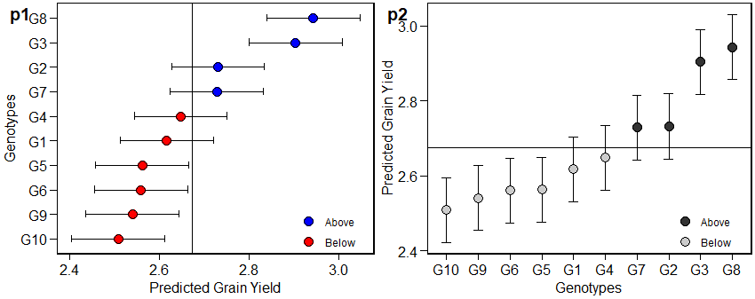

The metan (multi-environment trials analysis) package provides useful functions for analyzing multi-environment trial data using parametric and nonparametric methods, including, but not limited to:
- Within-environment analysis of variance;
- Estimation using AMMI considering different numbers of interaction principal component axes;
- AMMI-based stability indexes;
- GGE biplot analysis;
- Prediction in mixed-effect models;
- BLUP-based stability indexes;
- Variance components and genetic parameters in mixed-effect models;
- Cross-validation procedures for AMMI-family and BLUP models;
- Graphics tools for generating biplots;
- Parametric and nonparametric stability statistics
For more details see the complete vignette.
Getting started
Here, we will use the example dataset data_ge that contains data on two variables assessed in 10 genotypes growing in 14 environments. For more details see ?data_ge
library(metan)
library(ggplot2) # used to create the plots
library(cowplot) # used to arrange the plots
library(kableExtra) # Used to produce HTML tables
print_table = function(table){
kable(table, "html", digits = 3) %>%
kable_styling(bootstrap_options = c("striped", "hover", "condensed", "responsive"),
font_size = 12)
}
str(data_ge)
#> Classes 'tbl_df', 'tbl' and 'data.frame': 420 obs. of 5 variables:
#> $ ENV: Factor w/ 14 levels "E1","E10","E11",..: 1 1 1 1 1 1 1 1 1 1 ...
#> $ GEN: Factor w/ 10 levels "G1","G10","G2",..: 1 1 1 3 3 3 4 4 4 5 ...
#> $ REP: Factor w/ 3 levels "1","2","3": 1 2 3 1 2 3 1 2 3 1 ...
#> $ GY : num 2.17 2.5 2.43 3.21 2.93 ...
#> $ HM : num 44.9 46.9 47.8 45.2 45.3 ...AMMI model
Fitting the model
The AMMI model is fitted with the function waas(). For more details, see the complete vignette.
Predicting the response variable
The S3 method predict() is implemented for objects of class waas and may be used to estimate the response of each genotype in each environment considering different number of Interaction Principal Component Axis (IPCA). For example, we will use four IPCA (number of significant IPCAs) to estimate the variable GY using the model object. Note that $GY was used because using the predict() function to a model of class waas return a list, with one tbl_df for each variable.
| ENV | GEN | Y | resOLS | Ypred | ResAMMI | YpredAMMI | AMMI0 |
|---|---|---|---|---|---|---|---|
| E1 | G1 | 2.366 | \-0.084 | 2.450 | 0.07115484 | 2.521273 | 2.450 |
| E1 | G10 | 1.974 | \-0.344 | 2.318 | \-0.35391141 | 1.963751 | 2.318 |
| E1 | G2 | 2.902 | 0.311 | 2.591 | 0.29035016 | 2.880939 | 2.591 |
| E1 | G3 | 2.889 | 0.087 | 2.802 | \-0.04518795 | 2.756598 | 2.802 |
| E1 | G4 | 2.589 | 0.100 | 2.488 | 0.04942370 | 2.537781 | 2.488 |
| E1 | G5 | 2.188 | \-0.196 | 2.384 | \-0.07091881 | 2.312867 | 2.384 |
Biplots
ggplot2-based graphics are easily obtained in metan package. For example, the well-known AMMI2 biplot may be obtained as follows. Please, note that since waas() function allows analyzing multiple variables at the same time, e.g., resp = c(v1, v2, ...), the output model is a list, in this case with one element, GY.
p1 = plot_scores(model$GY, axis.expand = 1.5)
p2 = plot_scores(model$GY,
type = 1,
polygon = TRUE,
col.gen = "black",
col.env = "gray70",
col.segm.env = "gray70",
axis.expand = 1.5)
plot_grid(p1, p2, labels = c("p1","p2"))
GGE model
The GGE model is fitted with the function gge(). For more details, see the complete vignette.
model <- gge(data_ge, ENV, GEN, GY)
model2 <- gge(data_ge, ENV, GEN, GY, svp = "symmetrical")
p1 <- plot(model)
p2 <- plot(model2,
type = 2,
col.gen = "black",
col.env = "gray70",
axis.expand = 1.5)
plot_grid(p1, p2, labels = c("p1","p2"))
BLUP model
Linear-mixed effect models to predict the response variable in METs are fitted using the function waasb(). Here we will obtain the predicted means for genotypes in the variables GY and HM. For more details, see the complete vignette.
model2 <- waasb(data_ge, ENV, GEN, REP,
resp = c(GY, HM),
verbose = FALSE)
get_model_data(model2, what = "blupg") %>%
print_table()| gen | GY | HM |
|---|---|---|
| G1 | 2.617 | 47.396 |
| G10 | 2.509 | 48.375 |
| G2 | 2.731 | 47.108 |
| G3 | 2.903 | 47.756 |
| G4 | 2.648 | 48.050 |
| G5 | 2.563 | 48.918 |
| G6 | 2.560 | 48.530 |
| G7 | 2.729 | 48.004 |
| G8 | 2.943 | 48.784 |
| G9 | 2.541 | 47.962 |
Plotting the BLUPs for genotypes
To produce a plot with the predicted means, use the function plot_blup().
p1 = plot_blup(model2$GY)
p2 = plot_blup(model2$GY,
prob = 0.1,
col.shape = c("gray20", "gray80")) + coord_flip()
plot_grid(p1, p2, labels = c("p1", "p2"))
BLUPS for genotype-vs-environment interaction
The object BLUPgge contains the blups for the genotype-vs-environment interaction. In the following example, the values for GY are shown.
| ENV | GEN | BLUPge | BLUPg | BLUPg+ge | Predicted | LL | UL |
|---|---|---|---|---|---|---|---|
| E1 | G1 | \-0.062 | \-0.058 | \-0.120 | 2.401 | 2.298 | 2.505 |
| E1 | G10 | \-0.243 | \-0.166 | \-0.409 | 2.112 | 2.009 | 2.216 |
| E1 | G2 | 0.207 | 0.057 | 0.264 | 2.784 | 2.681 | 2.888 |
| E1 | G3 | 0.088 | 0.229 | 0.318 | 2.838 | 2.735 | 2.942 |
| E1 | G4 | 0.060 | \-0.026 | 0.034 | 2.554 | 2.451 | 2.658 |
When more than one variable is fitted, the predicted means for genotype-vs-environment combination may be obtained for all variables in the model using get_model_data().
| ENV | GEN | GY | HM |
|---|---|---|---|
| E1 | G1 | 2.401 | 46.587 |
| E1 | G10 | 2.112 | 47.152 |
| E1 | G2 | 2.784 | 45.664 |
| E1 | G3 | 2.838 | 46.249 |
| E1 | G4 | 2.554 | 48.017 |
| E1 | G5 | 2.268 | 49.390 |
Getting help
If you encounter a clear bug, please file a minimal reproducible example on github
Suggestions and criticisms to improve the quality and usability of the package are welcome!